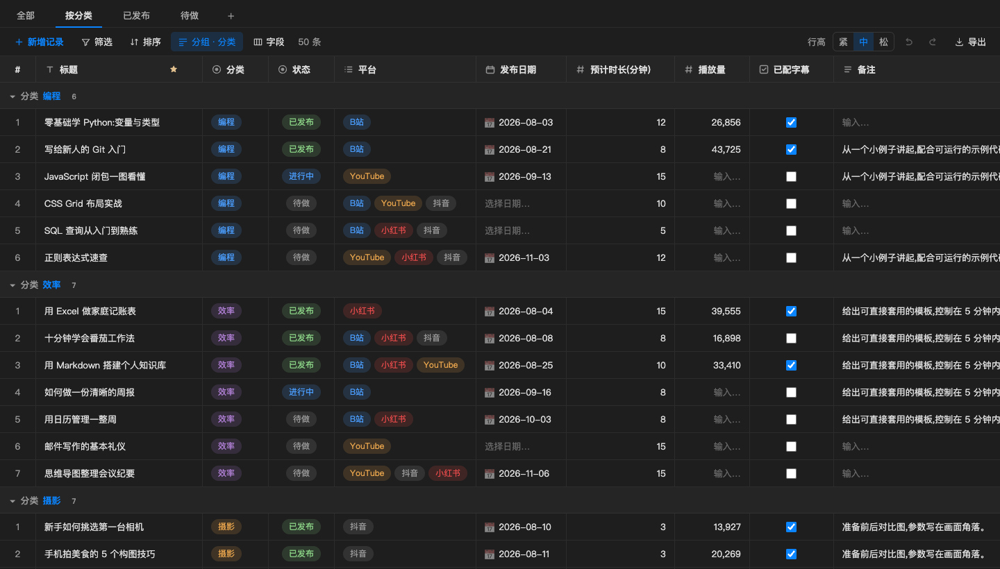
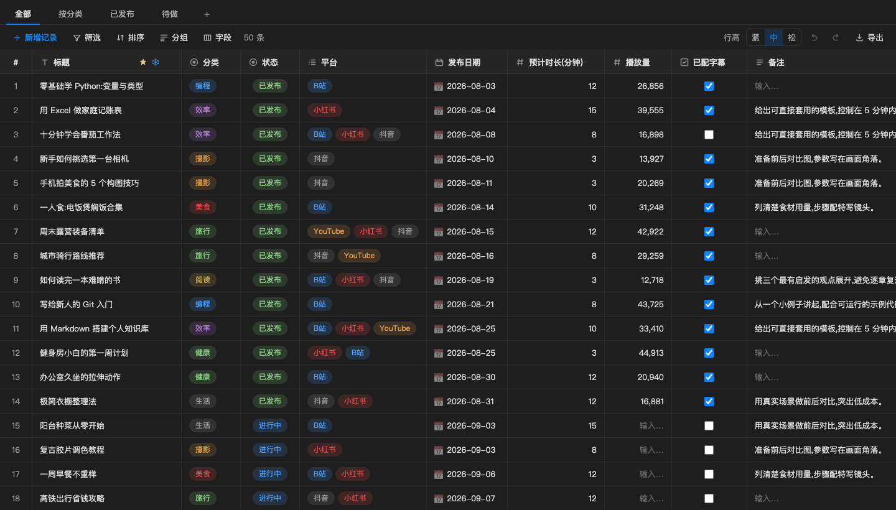
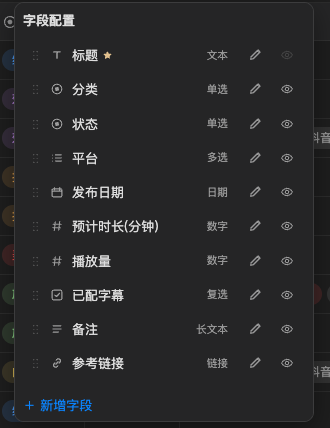
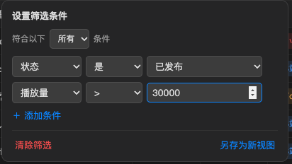
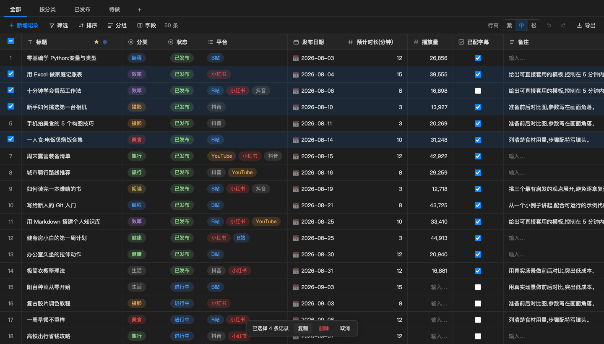

Views that remember
Every view keeps its own filters, sorting, grouping, hidden columns and widths. Switch with one click.

VS Code extension
Views, filters, grouping and inline editing for .base files in VS Code. Readable by people and AI agents alike.


For agents
Paste one prompt into Claude Code, Codex or Cursor. It downloads the latest release, installs it and checks the result.
# macOS / Linux: installs into every VS Code based editor it finds
curl -fsSL https://raw.githubusercontent.com/Azure12355/weilanx-base-table/main/scripts/install.sh | bash
# Only one editor
curl -fsSL https://raw.githubusercontent.com/Azure12355/weilanx-base-table/main/scripts/install.sh | BT_EDITOR=cursor bashEvery view keeps its own filters, sorting, grouping, hidden columns and widths. Switch with one click.

Combine conditions with AND or OR, across 16 operators.

Rebind any of them in Keyboard Shortcuts.
Hover a row number to multi-select. Copied records paste cleanly into Excel, Google Sheets, Feishu and WPS.

People get a spreadsheet. Agents get JSON they can parse in one call and edit with a few lines of code.
{
"fields": {
"标题": { "type": "text", "primary": true },
"状态": { "type": "select", "options": ["待做", "进行中", "已发布"] },
"平台": { "type": "multi", "options": ["B站", "小红书", "YouTube"] },
"播放量": { "type": "number", "thousands": true }
},
"views": [
{ "name": "按分类", "group": { "field": "分类" } },
{ "name": "已发布", "filters": [{ "field": "状态", "op": "is", "value": "已发布" }] }
],
"records": [
{ "id": "r_demo_01", "标题": "零基础学 Python", "状态": "已发布", "播放量": 26856 }
]
}Works with VS Code 1.90 or later, plus Cursor and other VS Code based editors.
Grab the latest build from GitHub Releases, or package it yourself:
npm install && npm run packageOpen the Extensions panel, click the ··· menu and choose Install from VSIX. Or use the CLI:
code --install-extension weilanx-base-table.vsix --forceDouble-click any .base file, or run "Create Base Table" from the Command Palette. The sidebar lists every table in your workspace.
Issues and pull requests are welcome.